import pandas as pd
import numpy as np
import scipy.stats as stats
import matplotlib.pyplot as plt
import seaborn as sns
from sklearn.model_selection import train_test_split
from sklearn.metrics import accuracy_score
from sklearn.model_selection import cross_val_score
from sklearn.linear_model import LogisticRegression
from sklearn.tree import DecisionTreeClassifier
from sklearn.preprocessing import FunctionTransformer
from sklearn.compose import ColumnTransformerData Transformation Techniques
A comprehensive guide to handling skewed data using Function Transformers (Log, Reciprocal, Square, Square Root) and Power Transformers (Box-Cox, Yeo-Johnson) to normalize feature distributions for machine learning models.
Handling Skewed Data
There are some kinds of data that does not follow the normal distribution. Some are right skewed, some are left skewed. If we want to use such data for linear models like linear regression, logistic regression, etc., the models may not perform well. To handle skewed data, we can apply different transformations. This transformation techniques can help to normalize the data and make it more suitable for linear models. Here are some common transformation techniques for handling skewed data:
- Log Transformation
- Reciprocal Transformation
- Square Transformation
- Square Root Transformation
| Log T | Reciprocal | sq (\(n^2\)) | sqrt \(\sqrt{n}\) |
|---|---|---|---|
| \(\log(n)\) | \(1/n\) | \(n^2\) | \(\sqrt{n}\) |
When we will apply these transformations, we will use the FunctionTransformer from the sklearn.preprocessing module.
There are some other transformation techniques which are known as power transformation techniques. They are:
1. Box-Cox Transformation
2. Yeo-Johnson Transformation
These are in the PowerTransformer class of the sklearn.preprocessing module.
Function Transformer
1. Log Transformation
When we will use it?
- When the data is right skewed (positively skewed).
- The data should not have zero or negative values.
We will use the titanic dataset. You can download the dataset from here.
We will just use the Age, Fare, and Survived columns for keeping our tutorial simple. But during the work, you have use all the columns of the dataset.
df = pd.read_csv('train.csv',usecols=['Age','Fare','Survived'])
df.head()| Survived | Age | Fare | |
|---|---|---|---|
| 0 | 0 | 22.0 | 7.2500 |
| 1 | 1 | 38.0 | 71.2833 |
| 2 | 1 | 26.0 | 7.9250 |
| 3 | 1 | 35.0 | 53.1000 |
| 4 | 0 | 35.0 | 8.0500 |
df.isnull().sum()Survived 0
Age 177
Fare 0
dtype: int64Here are some null values in the Age column. We will use the SimpleImputer, we learned earlier, to fill the null values with the mean of the column.
from sklearn.impute import SimpleImputer
imputer = SimpleImputer(strategy='mean')
df['Age'] = imputer.fit_transform(df[['Age']])
df.isnull().sum()Survived 0
Age 0
Fare 0
dtype: int64Now we will seperate the features and target variable. The Survived column is our target variable and the Age and Fare columns are our features.
X = df.drop('Survived', axis=1)
y = df['Survived']
X_train, X_test, y_train, y_test = train_test_split(X,y,test_size=0.2,random_state=42)Before applying the log transformation, we will see the ditribution of the columns.
plt.figure(figsize=(14,4))
plt.subplot(121)
sns.histplot(X_train['Age'], kde=True)
plt.title('Age PDF(Probability Density Function)')
plt.subplot(122)
stats.probplot(X_train['Age'], dist="norm", plot=plt)
plt.title('Age QQ Plot')
plt.show()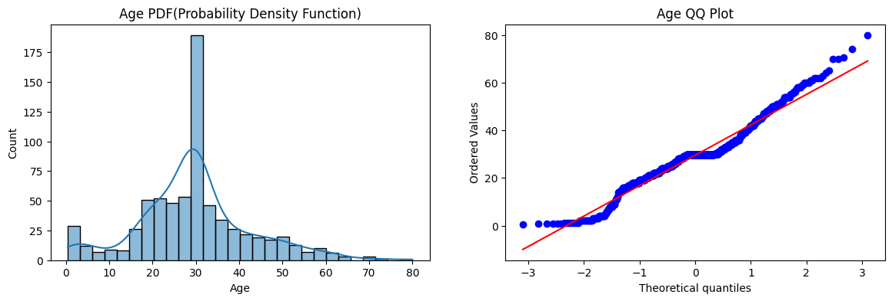
Insights:
- The distribution of the Age column, it is almost normally distributed.
- The Q-Q plot also shows that the data points are almost on the straight line. So we will not apply transformation on the Age column.
plt.figure(figsize=(14,4))
plt.subplot(121)
sns.histplot(X_train['Fare'], kde=True)
plt.title('Fare PDF(Probability Density Function)')
plt.subplot(122)
stats.probplot(X_train['Fare'], dist="norm", plot=plt)
plt.title('Fare QQ Plot')
plt.show()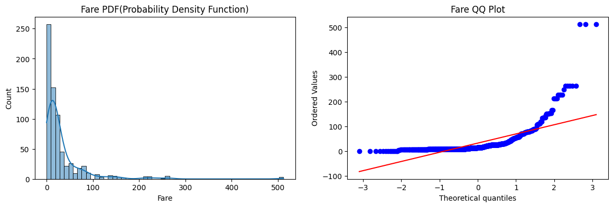
Insights:
- The Fare column is heavily right-skewed, as indicated by the PDF and QQ plot.
- The QQ plot for Fare shows that the data points deviate significantly from the straight line, confirming the presence of skewness.
- So, we need to apply transformation on the Fare column to make it more normally distributed.
The distribution is right skewed, so which transformation technique we will apply? We will apply the log transformation on the Fare column.
At first, we will train models and check accuracy without applying any transformation. Then we will apply the log transformation and check the accuracy again. Let’s see if we can find any difference.
clf = LogisticRegression()
clf2 = DecisionTreeClassifier()clf.fit(X_train, y_train)
clf2.fit(X_train, y_train)
y_pred = clf.predict(X_test)
y_pred2 = clf2.predict(X_test)
print("Logistic Regression Accuracy:", accuracy_score(y_test, y_pred))
print("Decision Tree Accuracy:", accuracy_score(y_test, y_pred2))Logistic Regression Accuracy: 0.6480446927374302
Decision Tree Accuracy: 0.6871508379888268Insights:
- The accuracy of the non-linear model (Decision Tree) is higher than the linear model (Logistic Regression) before applying the log transformation. Because non-linear models can handle skewed data better than linear models.
Now we will apply the log transformation and check the accuracy again.
We will use the FunctionTransformer and mention the function as np.log1p because it can handle zero values. The log1p function computes log(1 + x), which is useful for data that may contain zero values, as it avoids the issue of taking the logarithm of zero.
trf = FunctionTransformer(func=np.log1p)X_train_transformed = trf.fit_transform(X_train)
X_test_transformed = trf.transform(X_test)clf = LogisticRegression()
clf2 = DecisionTreeClassifier()
clf.fit(X_train_transformed,y_train)
clf2.fit(X_train_transformed,y_train)
y_pred = clf.predict(X_test_transformed)
y_pred2 = clf2.predict(X_test_transformed)
print("Logistic Regression Accuracy:",accuracy_score(y_test,y_pred))
print("Decision Tree Accuracy:",accuracy_score(y_test,y_pred2))Logistic Regression Accuracy: 0.6815642458100558
Decision Tree Accuracy: 0.6927374301675978Insights:
- The accuracy of the logistic regression model has improved after applying the log transformation.
- The accuracy of the decision tree model has not changed significantly even after applying the log transformation. This is because decision trees are not affected by the distribution of the data as much as linear models are.
- So, before using linear models, it is always a good practice to check the distribution of the data and apply appropriate transformations if needed.
Now we will apply Cross-Validation and check if the accuracy is consistent across different folds.
X_transformed = trf.fit_transform(X)
clf = LogisticRegression()
clf2 = DecisionTreeClassifier()
print("Cross-Validation Accuracy for Logistic Regression:", np.mean(cross_val_score(clf, X_transformed, y, cv=10)))
print("Cross-Validation Accuracy for Decision Tree:", np.mean(cross_val_score(clf2, X_transformed, y, cv=10)))Cross-Validation Accuracy for Logistic Regression: 0.678027465667915
Cross-Validation Accuracy for Decision Tree: 0.6577028714107366Now we will see in the graphical way how the log transformation has changed the distribution of the Fare column.
plt.figure(figsize=(14,4))
plt.subplot(121)
stats.probplot(X_train['Fare'], dist="norm", plot=plt)
plt.title('Fare Before Log Transformation')
plt.subplot(122)
stats.probplot(X_train_transformed['Fare'], dist="norm", plot=plt)
plt.title('Fare After Log Transformation')
plt.show()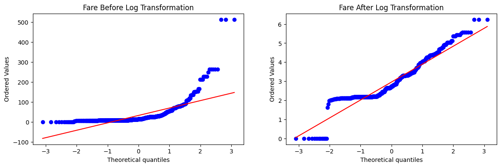
Insights:
- After applying the log transformation, the distribution of the Fare column has aligned more with the straight line in the Q-Q plot, indicating that the data is now more normally distributed.
Now we will see the Q-Q plot of the Age column before and after applying the log transformation.
plt.figure(figsize=(14,4))
plt.subplot(121)
stats.probplot(X_train['Age'], dist="norm", plot=plt)
plt.title('Age Before Log')
plt.subplot(122)
stats.probplot(X_train_transformed['Age'], dist="norm", plot=plt)
plt.title('Age After Log')
plt.show()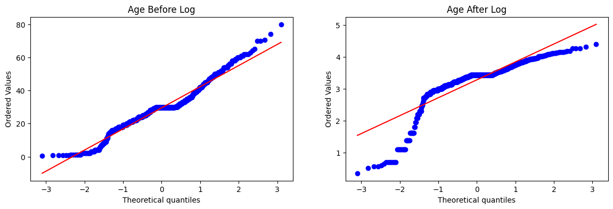
Insights:
- Why the Q-Q plot of the Age column is deviated from the straight line after applying the log transformation? Because the Age column is almost normally distributed before applying the log transformation. So, when we apply the log transformation, it distorts the distribution of the Age column and makes it less normally distributed. This is why we should not apply transformation on the Age column.
Now we will just apply the log transformation on the Fare column but not on the Age column and check the accuracy again. We can use the ColumnTransformer to apply the log transformation only on the Fare column.
trf = ColumnTransformer(
transformers=[
('log_fare', FunctionTransformer(func=np.log1p), ['Fare'])
], remainder='passthrough'
)
X_train_transformed = trf.fit_transform(X_train)
X_test_transformed = trf.transform(X_test)clf = LogisticRegression()
clf2 = DecisionTreeClassifier()
clf.fit(X_train_transformed, y_train)
clf2.fit(X_train_transformed, y_train)
y_pred_lr = clf.predict(X_test_transformed)
y_pred_dt = clf2.predict(X_test_transformed)
print("Logistic Regression Accuracy:", accuracy_score(y_test, y_pred_lr))
print("Decision Tree Accuracy:", accuracy_score(y_test, y_pred_dt))Logistic Regression Accuracy: 0.6703910614525139
Decision Tree Accuracy: 0.6815642458100558We will again use cross-validation to check the accuracy.
X_transformed = trf.fit_transform(X)
clf = LogisticRegression()
clf2 = DecisionTreeClassifier()
print("LR",np.mean(cross_val_score(clf,X_transformed,y,scoring='accuracy',cv=10)))
print("DT",np.mean(cross_val_score(clf2,X_transformed,y,scoring='accuracy',cv=10)))LR 0.6712609238451936
DT 0.6566167290886391The accuracy score didn’t change that much. But we will see the Q-Q plot of the Age column.
plt.figure(figsize=(14,4))
plt.subplot(121)
sns.histplot(X_train_transformed[:,1], kde=True)
plt.title('Age PDF (After Transformation)')
plt.subplot(122)
stats.probplot(X_train_transformed[:, 1], dist="norm", plot=plt)
plt.title('Age QQ Plot (After Transformation)')
plt.show()This isn’t changed as we didn’t apply the log transformation on the Age column.
Now we will apply other transformation techniques. At first, we will create a generic function which will take the transformation technique as an argument and apply that transformation on the Fare column. Then we will check the accuracy of the models and see the Q-Q plot of the Fare column after applying the transformation.
def apply_transformation(transformation):
X = df.drop('Survived', axis=1)
y = df['Survived']
trf = ColumnTransformer(
transformers = [
('log_fare', FunctionTransformer(func=transformation), ['Fare'])
], remainder='passthrough'
)
X_transformed = trf.fit_transform(X)
clf = LogisticRegression()
print("Accuracy", np.mean(cross_val_score(clf, X_transformed, y, scoring='accuracy', cv=10)))
plt.figure(figsize=(14,4))
plt.subplot(121)
stats.probplot(X['Fare'], dist="norm", plot=plt)
plt.title('Fare Before Transform')
plt.subplot(122)
stats.probplot(X_transformed[:,0], dist="norm", plot=plt)
plt.title('Fare After Transform')
plt.show()Now we will apply the transformation techniques one by one.
apply_transformation(np.log1p)Accuracy 0.6712609238451936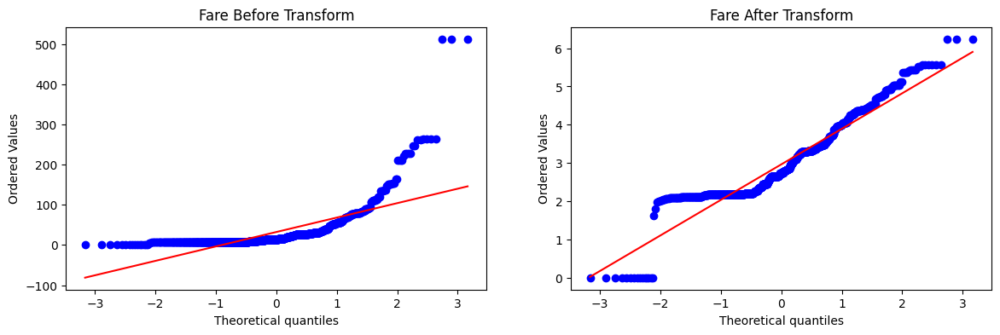
2. Reciprocal Transformation
apply_transformation(lambda x: 1/(x+0.1))Accuracy 0.61729088639201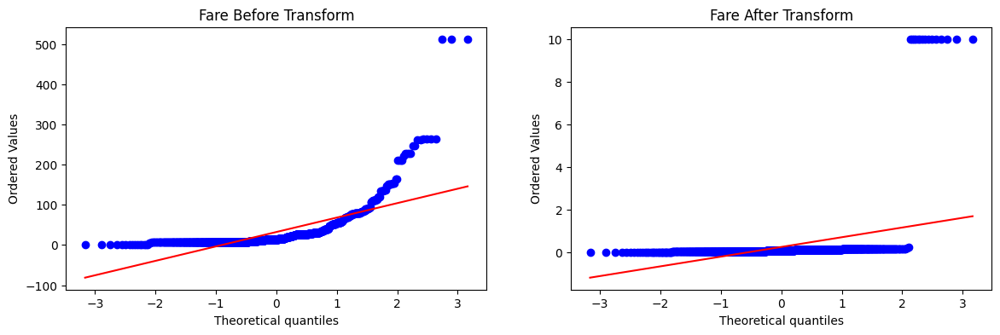
Insights:
- The reciprocal transformation does not perform well on right-skewed data like the Fare column. The accuracy of the logistic regression model has decreased significantly after applying the reciprocal transformation.
3. Square Transformation
apply_transformation(np.square)Accuracy 0.6431335830212235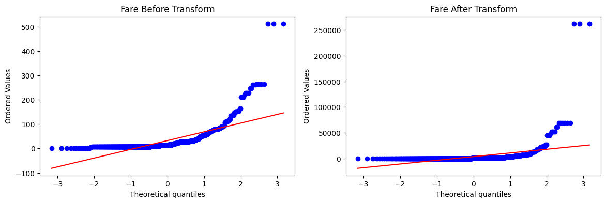
Insights:
- After applying the square transformation, the Q-Q plot of the Fare column is more aligned with the straight line, indicating that the data is now more normally distributed.
- The accuracy score is good but less than the log transformation.
4. Square Root Transformation
apply_transformation(lambda x: x**0.5)Accuracy 0.6611485642946316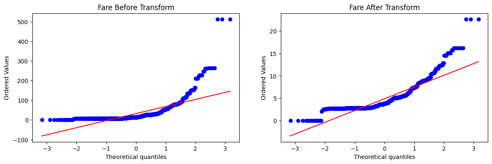
Insights:
- The square transformation is almost like the square transformation.
- So, the log transformation is the best transformation technique for handling right-skewed data like the Fare column in this case.
If the data was left skewed, the square transformation would have been the best transformation technique.
Power Transformation Techniques
1. Box-Cox Transformation
The Box-Cox transformation is a power transformation technique used to stabilize variance and normalize data that does not follow a normal distribution.
It is defined mathematically as:
\[y(\lambda) = \begin{cases} \frac{y^\lambda - 1}{\lambda} & \text{if } \lambda \neq 0 \\\\ \ln(y) & \text{if } \lambda = 0 \end{cases}\]
Key Characteristics:
- Assumption: The target variable \(y\) must contain only strictly positive values (\(y > 0\)).
- Parameter (\(\lambda\)): The transformation searches for an optimal parameter \(\lambda\) that maximizes the log-likelihood function to make the data as close to normally distributed as possible.
- Implementation: In scikit-learn, it can be applied using the PowerTransformer class with the method='box-cox' parameter.
In this transformation, we have the find the optimal value of \(\lambda\) that will make the data as close to normally distributed as possible.
from sklearn.linear_model import LinearRegression
from sklearn.metrics import r2_score
from sklearn.preprocessing import PowerTransformerWe will use concrete dataset for this transformation. You can download the dataset from here.
df = pd.read_csv('concrete_data.csv')
df.head()| Cement | Blast Furnace Slag | Fly Ash | Water | Superplasticizer | Coarse Aggregate | Fine Aggregate | Age | Strength | |
|---|---|---|---|---|---|---|---|---|---|
| 0 | 540.0 | 0.0 | 0.0 | 162.0 | 2.5 | 1040.0 | 676.0 | 28 | 79.99 |
| 1 | 540.0 | 0.0 | 0.0 | 162.0 | 2.5 | 1055.0 | 676.0 | 28 | 61.89 |
| 2 | 332.5 | 142.5 | 0.0 | 228.0 | 0.0 | 932.0 | 594.0 | 270 | 40.27 |
| 3 | 332.5 | 142.5 | 0.0 | 228.0 | 0.0 | 932.0 | 594.0 | 365 | 41.05 |
| 4 | 198.6 | 132.4 | 0.0 | 192.0 | 0.0 | 978.4 | 825.5 | 360 | 44.30 |
df.shape(1030, 9)df.isnull().sum()Cement 0
Blast Furnace Slag 0
Fly Ash 0
Water 0
Superplasticizer 0
Coarse Aggregate 0
Fine Aggregate 0
Age 0
Strength 0
dtype: int64df.describe()| Cement | Blast Furnace Slag | Fly Ash | Water | Superplasticizer | Coarse Aggregate | Fine Aggregate | Age | Strength | |
|---|---|---|---|---|---|---|---|---|---|
| count | 1030.000000 | 1030.000000 | 1030.000000 | 1030.000000 | 1030.000000 | 1030.000000 | 1030.000000 | 1030.000000 | 1030.000000 |
| mean | 281.167864 | 73.895825 | 54.188350 | 181.567282 | 6.204660 | 972.918932 | 773.580485 | 45.662136 | 35.817961 |
| std | 104.506364 | 86.279342 | 63.997004 | 21.354219 | 5.973841 | 77.753954 | 80.175980 | 63.169912 | 16.705742 |
| min | 102.000000 | 0.000000 | 0.000000 | 121.800000 | 0.000000 | 801.000000 | 594.000000 | 1.000000 | 2.330000 |
| 25% | 192.375000 | 0.000000 | 0.000000 | 164.900000 | 0.000000 | 932.000000 | 730.950000 | 7.000000 | 23.710000 |
| 50% | 272.900000 | 22.000000 | 0.000000 | 185.000000 | 6.400000 | 968.000000 | 779.500000 | 28.000000 | 34.445000 |
| 75% | 350.000000 | 142.950000 | 118.300000 | 192.000000 | 10.200000 | 1029.400000 | 824.000000 | 56.000000 | 46.135000 |
| max | 540.000000 | 359.400000 | 200.100000 | 247.000000 | 32.200000 | 1145.000000 | 992.600000 | 365.000000 | 82.600000 |
Here Strength is our target variable.
X = df.drop('Strength', axis=1)
y = df['Strength']
X_train, X_test, y_train, y_test = train_test_split(X,y,test_size=0.2,random_state=42)
lr = LinearRegression()
lr.fit(X_train,y_train)
y_pred = lr.predict(X_test)
r2_score(y_test,y_pred)0.6275531792314848Note: Here the target variable
Strengthcontains continuous values. So, we will use the r2 score to evaluate the performance of the models instead of accuracy score(because accuracy score is used for classification problems, not for regression problems).
Now we will apply cross-validation and check if the r2 score of the models is consistent across different folds.
lr = LinearRegression()
np.mean(cross_val_score(lr,X,y,scoring='r2',cv=10))np.float64(0.27820729160873753)There is a significant performance drop after cross-validation. So, we should not rely on the r2 score of the models without applying cross-validation. We should always apply cross-validation to check the performance of the models.
So, we will perform some EDA tasks to check how is the data.
for col in X_train.columns:
plt.figure(figsize=(14,4))
plt.subplot(121)
sns.histplot(X_train[col], kde=True)
plt.title(col)
plt.subplot(122)
stats.probplot(X_train[col], dist="norm", plot=plt)
plt.title(col)
plt.show()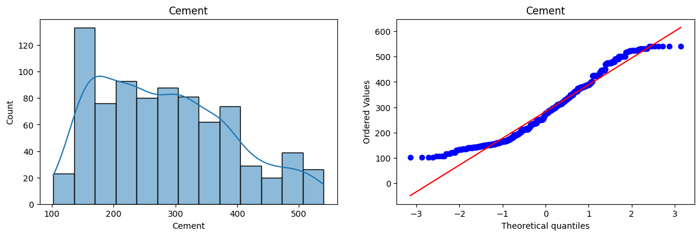
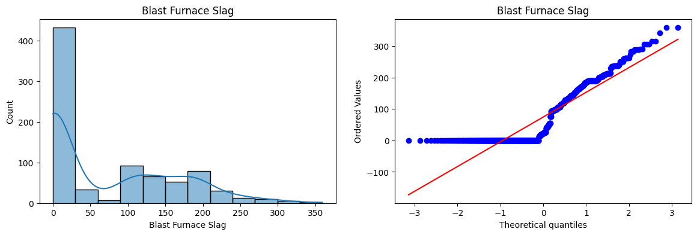
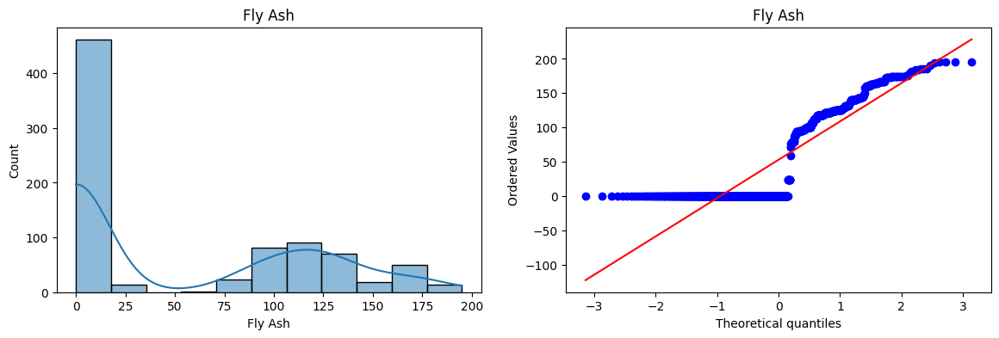
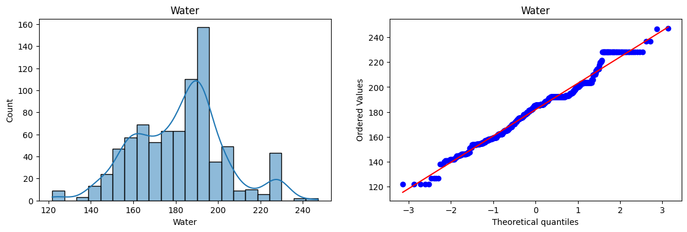
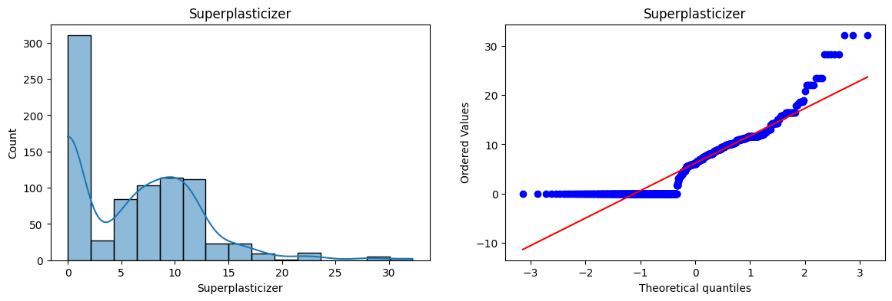
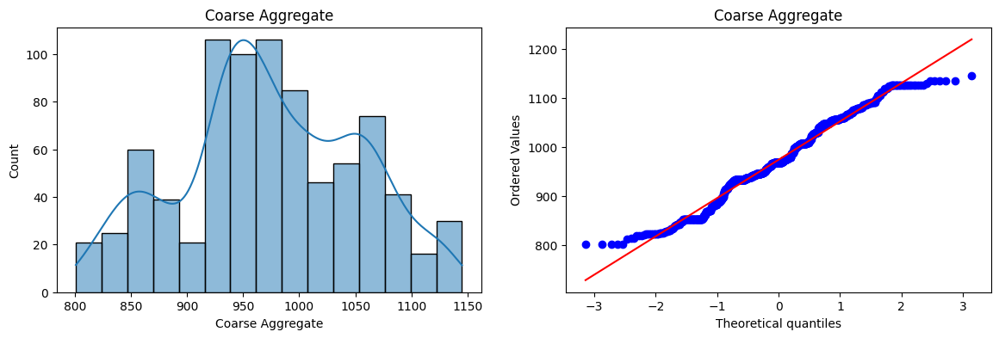
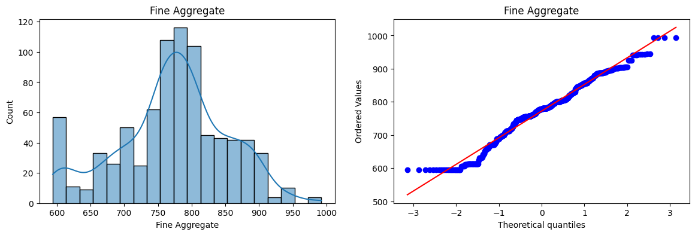
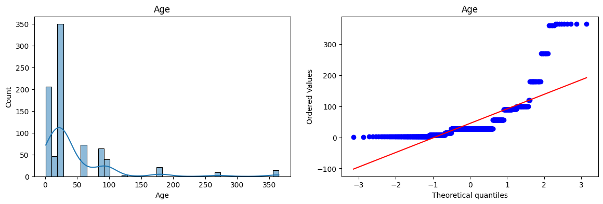
Insights:
- Cement, Water, Corse_Aggregate, and Fine_Aggregate columns are close to normal distribution.
# Applying Box-Cox Transform
pt = PowerTransformer(method='box-cox')
# Adding a small constant to avoid zero values in the data because Box-Cox transformation cannot be applied to zero or negative values.
X_train_transformed = pt.fit_transform(X_train+0.000001)
X_test_transformed = pt.transform(X_test+0.000001)
pd.DataFrame({'cols':X_train.columns,'box_cox_lambdas':pt.lambdas_}) # This is for the lambda parameter of each column| cols | box_cox_lambdas | |
|---|---|---|
| 0 | Cement | 0.177025 |
| 1 | Blast Furnace Slag | 0.025093 |
| 2 | Fly Ash | -0.038970 |
| 3 | Water | 0.772682 |
| 4 | Superplasticizer | 0.098811 |
| 5 | Coarse Aggregate | 1.129813 |
| 6 | Fine Aggregate | 1.782018 |
| 7 | Age | 0.066631 |
Now we will check the accuracy of the models after applying the Box-Cox transformation.
lr = LinearRegression()
lr.fit(X_train_transformed,y_train)
y_pred = lr.predict(X_test_transformed)
r2_score(y_test,y_pred)0.8047825008078886Look the accuracy score has improved significantly after applying the Box-Cox transformation. Now we will again apply cross-validation and check if the r2 score of the models is consistent across different folds.
pt = PowerTransformer(method='box-cox')
X_transformed = pt.fit_transform(X+0.000001)
lr = LinearRegression()
print("Cross-Validation R2 Score:", np.mean(cross_val_score(lr, X_transformed, y, scoring='r2', cv=10)))Cross-Validation R2 Score: 0.6466764736678003The cross-validation r2 score has also improved significantly after applying the Box-Cox transformation.
Now we will see the distribution of the columns after applying the Box-Cox transformation.
X_train_transformed = pd.DataFrame(X_train_transformed,columns=X_train.columns)
for col in X_train_transformed.columns:
plt.figure(figsize=(14,4))
plt.subplot(121)
sns.histplot(X_train[col], kde=True)
plt.title(f"{col} (Before Box-Cox)")
plt.subplot(122)
sns.histplot(X_train_transformed[col], kde=True)
plt.title(f"{col} (After Box-Cox)")
plt.show()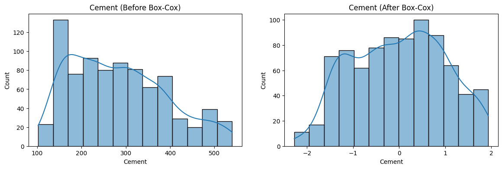
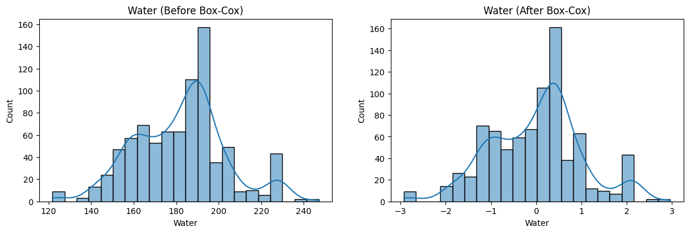
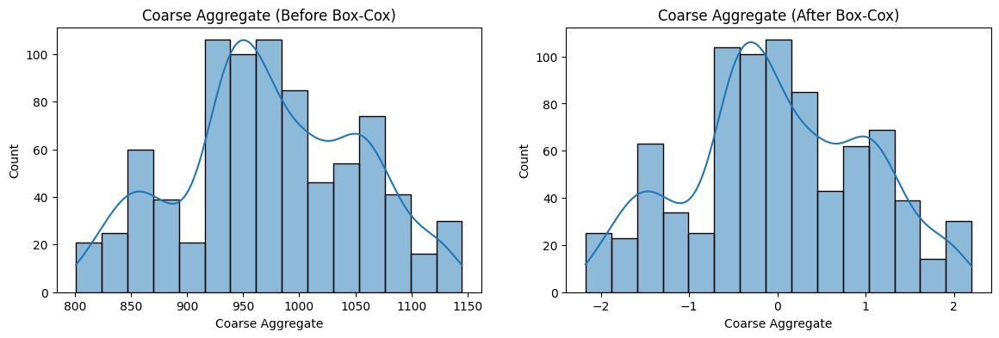
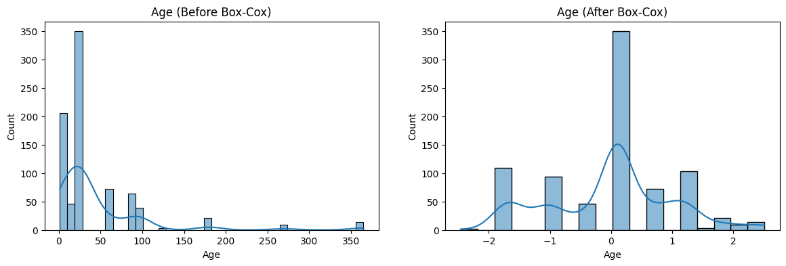
2. Yeo-Johnson Transformation
The Yeo-Johnson transformation is a power transformation technique used to stabilize variance and make data more normally distributed. It is defined mathematically as:
\[y(\lambda) = \begin{cases} \frac{(y + 1)^\lambda - 1}{\lambda} & \text{if } \lambda \neq 0, y \geq 0 \\\\ \ln(y + 1) & \text{if } \lambda = 0, y \geq 0 \\\\ -\frac{(-y + 1)^{2 - \lambda} - 1}{2 - \lambda} & \text{if } \lambda \neq 2, y < 0 \\\\ -\ln(-y + 1) & \text{if } \lambda = 2, y < 0 \end{cases}\]
Why Yeo-Johnson is Broadly Used (Solving Box-Cox Drawbacks)
- Support for Zero and Negative Values: The primary drawback of the Box-Cox transformation is that it requires the target variable to be strictly positive (\(y > 0\)). If the dataset contains zeros or negative numbers, Box-Cox cannot be applied without shifting the data.
- Universal Applicability: The Yeo-Johnson transformation solves this limitation by allowing \(y\) to be positive, zero, or negative. This makes it highly versatile and broadly applicable to any numerical feature without requiring manual data-shifting prep work.
- Implementation: In scikit-learn, it can be applied using the PowerTransformer class with the method='yeo-johnson' parameter (which is also the default method).
Now we will apply the Yeo-Johnson transformation.
pt = PowerTransformer() # By default, it uses the Yeo-Johnson method
X_train_transformed = pt.fit_transform(X_train)
X_test_transformed = pt.transform(X_test)
lr = LinearRegression()
lr.fit(X_train_transformed,y_train)
y_pred = lr.predict(X_test_transformed)
print("R2 Score after Yeo-Johnson Transformation:", r2_score(y_test,y_pred))
pd.DataFrame({'cols':X_train.columns,'yeo_johnson_lambdas':pt.lambdas_})R2 Score after Yeo-Johnson Transformation: 0.8161906511066099| cols | yeo_johnson_lambdas | |
|---|---|---|
| 0 | Cement | 0.174348 |
| 1 | Blast Furnace Slag | 0.015715 |
| 2 | Fly Ash | -0.161447 |
| 3 | Water | 0.771307 |
| 4 | Superplasticizer | 0.253935 |
| 5 | Coarse Aggregate | 1.130050 |
| 6 | Fine Aggregate | 1.783100 |
| 7 | Age | 0.019885 |
Now we will apply the cross-validation and check the r2 score of the models.
pt = PowerTransformer()
X_transformed = pt.fit_transform(X)
lr = LinearRegression()
print("Cross-Validation R2 Score after Yeo-Johnson:", np.mean(cross_val_score(lr, X_transformed, y, scoring='r2', cv=10)))Cross-Validation R2 Score after Yeo-Johnson: 0.6586548619389643Here is also a significant improvement in the r2 score after applying the Yeo-Johnson transformation. Let’s see the distribution of the columns after applying the Yeo-Johnson transformation.
X_train_transformed = pd.DataFrame(X_train_transformed,columns=X_train.columns)
for col in X_train_transformed.columns:
plt.figure(figsize=(14,4))
plt.subplot(121)
sns.histplot(X_train[col], kde=True)
plt.title(f"{col} (Before Yeo-Johnson)")
plt.subplot(122)
sns.histplot(X_train_transformed[col], kde=True)
plt.title(f"{col} (After Yeo-Johnson)")
plt.show()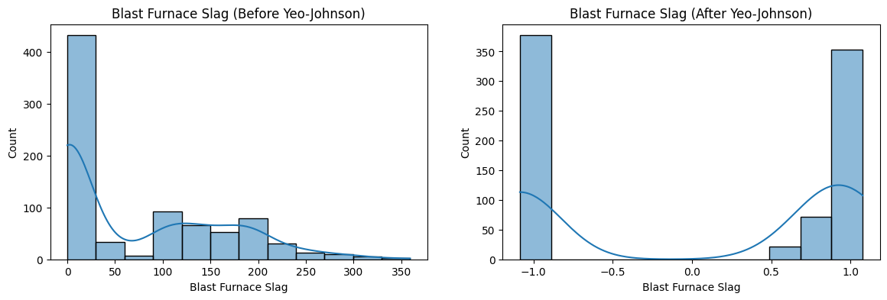
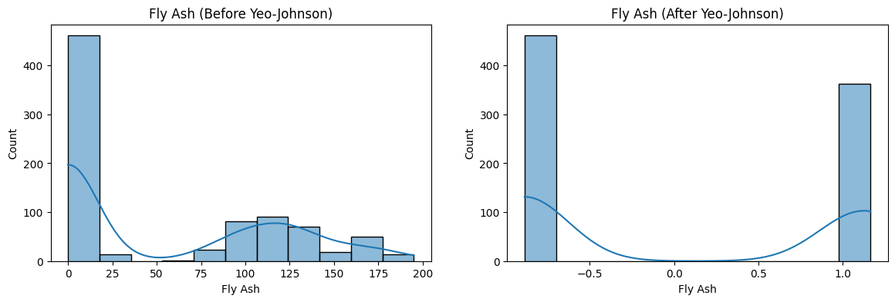
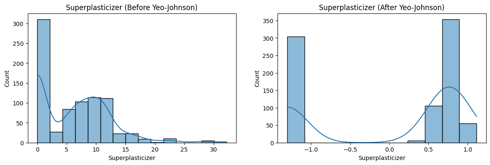
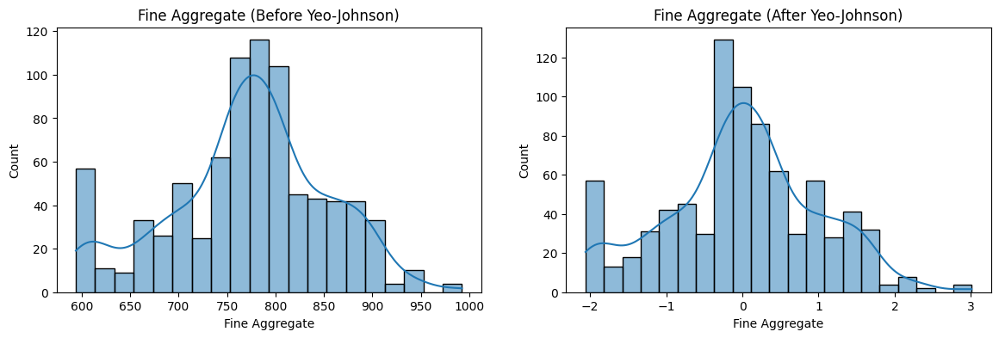
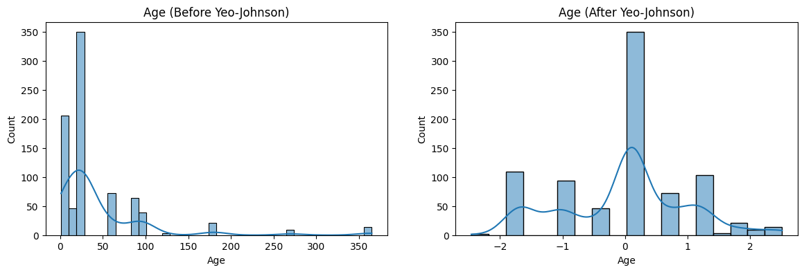
Side by Side lambda values of the Box-Cox and Yeo-Johnson transformations:
pt = PowerTransformer(method='box-cox')
X_train_transformed = pt.fit_transform(X_train+0.000001)
pt1 = PowerTransformer(method='yeo-johnson')
X_train_transformed1 = pt1.fit_transform(X_train)
pd.DataFrame({'cols':X_train.columns,'box_cox_lambdas':pt.lambdas_,'Yeo_Johnson_lambdas':pt1.lambdas_})| cols | box_cox_lambdas | Yeo_Johnson_lambdas | |
|---|---|---|---|
| 0 | Cement | 0.177025 | 0.174348 |
| 1 | Blast Furnace Slag | 0.025093 | 0.015715 |
| 2 | Fly Ash | -0.038970 | -0.161447 |
| 3 | Water | 0.772682 | 0.771307 |
| 4 | Superplasticizer | 0.098811 | 0.253935 |
| 5 | Coarse Aggregate | 1.129813 | 1.130050 |
| 6 | Fine Aggregate | 1.782018 | 1.783100 |
| 7 | Age | 0.066631 | 0.019885 |